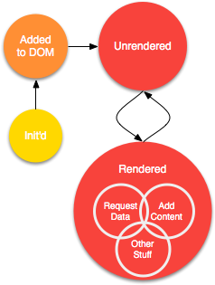
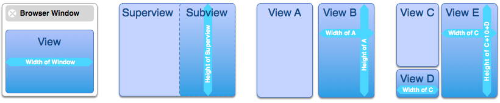

Foundation Basics
Foundation Basics The View
The View Putting it all together
Putting it all together FAQs
FAQsSee the View, be the View

Let’s pretend we have a web application. Right now it’s straight Javascript, HTML and CSS. It works,
but we want to start using more robust, abstracted components and start working with more Javascript so the
application will be easier to use, more responsive and easier to develop at a higher level. Using CIP gives us
the freedom to replace components and views on an ad-hoc basis. Let’s also pretend that we want to write our
components for our application. CIP has an extensive UI kit, but we really just need one or two components, not
the whole kit-n-kaboodle. We’ll introduce CIView concepts by creating a simple button component.
All visual components inherit from CIView. It provides an object with the mechanisms it needs
to behave consistently: a subviews Array property, a CIRect to define its boundaries,
usage of CIResizeBehavior to describe what happens when it is resized, the _makeElement
method to lay the immutable structure of the component, and render and unrender methods
with which to populate the component.
There are four steps to extending CIView:
- Extend and initialize the subclass like any other.
- Programmatically define the structure of the component in the
_makeElementmethod. - Override the
unrendermethod to remove the mutable content from the component. - Override the
rendermethod, to put content into the component.
EXButton’s initialization
var EXButton = new Class({ Extends: CIView, initialize: function(configuration) { this.parent(configuration); this.isA('EXButton'); this.synthesize({ label: '' }, configuration); } });
Element, element. Who’s got the element?
CIP is cognizant of the building blocks of the web, HTML, CSS and Javascript. It doesn’t try to abstract away all HTML and CSS because there’s really no way around using it — no matter what framework you use, your code eventually becomes HTML, CSS and Javascript. So why not take control over it? To that extent, CIP requires you to dust off your DOM and CSS knowledge for element creation, unrendering and rendering.
Element creation is the step in which the skeleton of your component is laid. Said skeleton is called
the immutable structure (IS) because it should be…immutable. Usually this involves adding
a few empty container elements, defining event handlers, telling subviews where they should lay their IS’s,
and then calling render. All of this is handled in your view’s _makeElement method,
which takes one parameter, usually called parent. As you may have guessed, the underscore
indicates this method is not to be called publicly. When you are ready to put your component on the page, you
just call its element method, passing the containing HTML element.
The element method operates in two modes, depending on whether a parameter is given:
-
When given a
StringorElement, it looks for the givenElement’sidin the DOM using Mootools’$method, then passes it to the calling object’s_makeElementmethod. -
When given no arguments, it looks up the calling component’s
Elementin the DOM by itsidand returns it. It returnsnullif noElementwas found.
The use of HTML is integral to creating visual components in CIP. Components are injected into specific elements in the DOM, which makes CIP lightweight. You can mix CIP components freely with your existing HTML pages — construct an entire application or just add a few nice touches — it’s up to you.
EXButton’s Immutable Structure
initialize: function(configuration) { ... }, _makeElement: function(parent) { var button = new Element('div', this._objectForViewBaseElement() ); /* new Element('div', { id: this.id, 'class': this.__className, styles: this.frame.toCssStylesObject() }); */ parent.adopt(button); button.adopt(new Element('span', { html: '' })); button.addEvent('click', this._clicked.bind(this) ); this.render(); return button; }
In our CSS file, we would set the font-size, background-image or -color,
and any other styling we would want for our button. Unless your component has a fixed width and/or height, the width
and height styles should be omitted and left up to the component’s CIRect.
Wax on, wax off, unrender, render
If the immutable structure is the skeleton of a component, then the unrender and render methods are the muscles.
Unrender’s job is to remove all of the content from the IS, returning the component to the same visual
state it was in right after it was added to the page. Render first calls unrender, then puts the content into the
IS, requesting data and styling as necessary.
Both methods should fire the CIEvent.Unrendered and CIEvent.Rendered
events, respectively. By listening for these events, other components can be made to re-render when dependent components have changed without
having to listen for specific property changes.
EXButton’s un/rendering
_makeElement: function(parent) { ... }, unrender: function() { this.element().getFirst().set('html', ''); this.fireEvent(CIEvent.Unrendered); }, render: function() { this.unrender(); this.element().getFirst().set('html', this.label); this.fireEvent(CIEvent.Rendered); }
It may seem inefficient, removing content just to add it back, but the render/unrender cycle isn’t
invoked that often, just when a component’s representation changes. A component’s representation is its visual
presentation which incorporates its data and state. A button’s representation, for example, would rarely change. Its data may just be
its label and its only state may be its enabled/disabled state. These are both represented directly and require a change of its representation
no matter what. For more complicated components, it’s up to you to decide when it should change its representation.
Oh, behave!
Now you know the basics of extending CIView. Of course, there is much more to a CIView than
its content. If your view has dimensions, you will want to work with its CIRect frame (another concept
borrowed from Cocoa). A view’s frame is an instance of CIRect that describes a view’s
width, height, coordinates (x and y), positioning behavior, clipping behavior, and resizing behavior.
The first three properties are self explanatory. A CIRect’s positioning behavior
corresponds to the CSS position property, while its clipping behavior corresponds to the CSS overflow
property. The resizing behavior, however, is unique to CIP.
Resizing behavior describes how a component’s frame CIRect changes its width and height properties. It is
an instance of CIResizeBehavior. Using CIResizeBehavior, you can tell a CIView that
its width should always be the same as the browser window; or that it should be the width of the window minus a certain
amount; or that it should be the width of the window minus the width of another view. You can also tell a view that its height
should be the same height as its superview; or that its height should be the height of another view plus a certain amount
depending on whether one of its subviews is visible or not.

All of this is possible, and much simpler than you might think, due to Javascript’s closures. For simplicity,
CIRect provides common resize behaviors: width/height of window, width/height of superview,
width/height of a specified view, and height of the tallest subview of a specified view (the black sheep of the provided behaviors).
Of course, you can you can give CIRect a custom CIResizableBehavior if you want alternate
resizing logic. Finally, CIResziableBehavior doesn't depend on CIRect, so feel free to use
it wherever you need to keep one value in sync with another.
Children of the View
The final major piece of CIView is its subviews Array. By keeping your component’s child views
in CIView#subviews, you can take advantage of how CIP handles window resizing. And subviews is key-value-compliant,
so other views can be notified when components lose or gain a subviews. This is useful for container components with
content that changes frequently.
Finishing and using EXButton
Our example button won’t deal with a frame or subviews, but we do need to give it a click event handler.
... unrender: function() { ... }, render: function() { ... }, _clicked: function(event) { this.fireEvent(CIEvent.Clicked, event); } }); // end of our EXButton Class
Now we can use our EXButton to do things when clicked:
var myButton = new EXButton({ text: 'Click me!', Clicked: function(event) { alert('Hello, World!'); } }); myButton.element($('myPlaceWithTheButtons'));